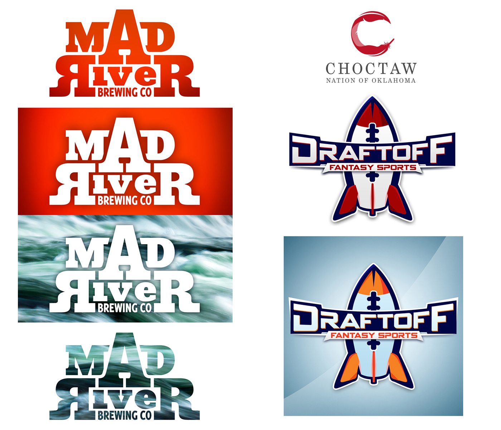

Other Projects
Some of My Design Projects
Some of My Design Projects
Some of the other work I've done over the years. I don't work on a ton of logos but here are a couple I put together. It’s a combination of freelance work and projects from previous jobs.
Logo I created for a flight data company, trying to incorporate the airplane into the V shape.
At one studio we did a lot of pitch decks and prototypes for people looking to raise funding. Here are a few mobile screens from two of those. Also including some general web designs from various places, going a few years back.